Portfolio
Design v praxi.
Od značky po detail.
Od kulturních akcí po zdravotnictví. Prohlédni si, jak převádím charakter značek do identity, kampaní, tiskovin a digitálu. U každého projektu najdeš konkrétní rozsah práce.
Projekty

Young Lions 2026
Od registrace po předávání cen v jednom vizuálním stylu.

LekIQ
Jednotná komunikace od obalů po spolupráci s Vicks.

Česká lékárnická komora
Přehledné informace v tiskovinách i na sociálních sítích.

Therrapia
Klidný a přehledný web pro první kontakt s terapeutkou.

Divadlo PONEC
Sezona, lekce a sociální sítě v rozpoznatelné podobě.

Czech Dance Platform
Jedna festivalová identita od pozvánky po merch.
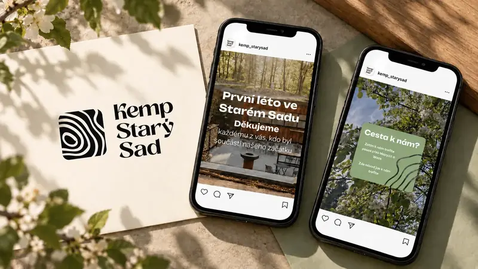
Kemp Starý Sad
Vlastní tvář kempu v logu i na Instagramu.
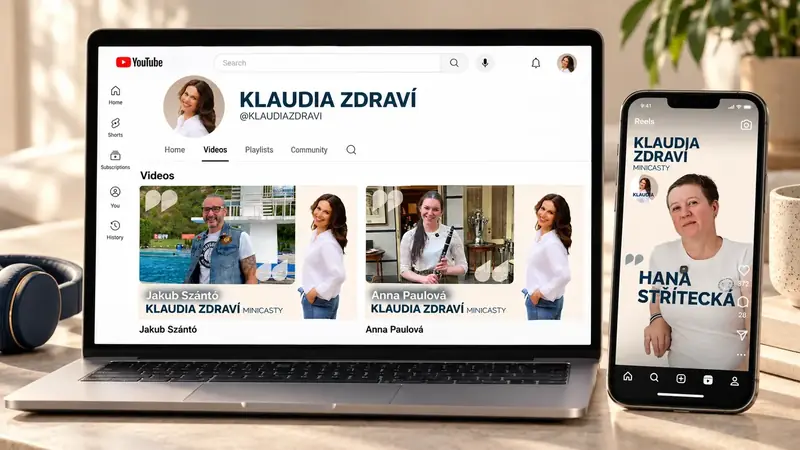
Klaudia Zdraví
Rozpoznatelné videocasty na YouTube i Instagramu.
Mitogena
Identita, infuzní sáčky, krabičky a etikety flakonů.
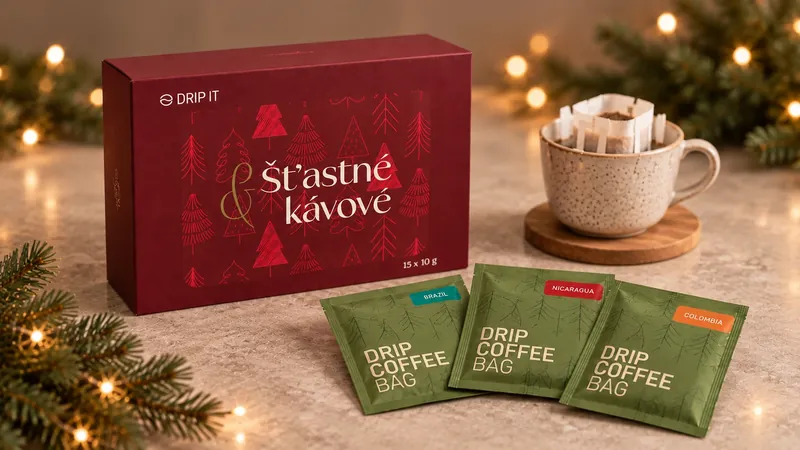
Drip It
Vánoční design krabičky i jednotlivých sáčků kávy.
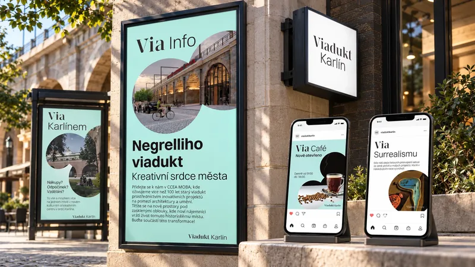
Viadukt Karlín
Vizuální systém pro kulturní prostor a jeho komunikaci.
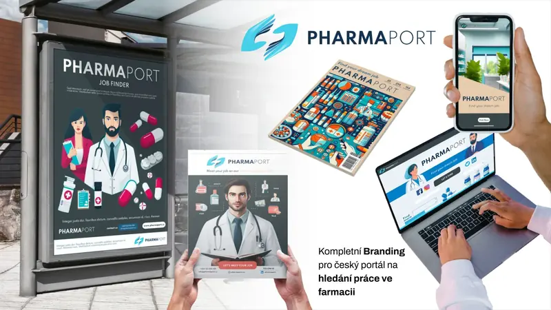
PharmaPort
Rozpoznatelná značka pracovního portálu napříč propagací.
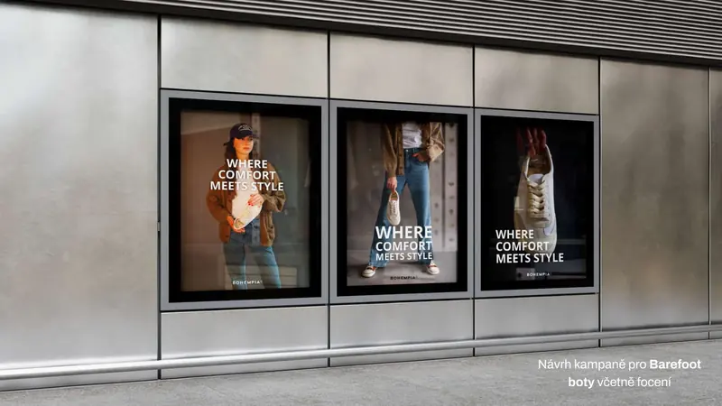
Bohempia
Kampaň a fotografie propojující pohodlí se stylem.
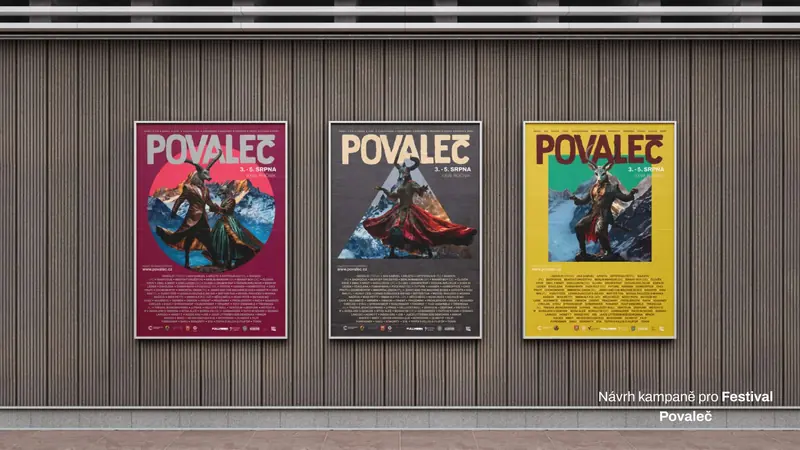
Festival Povaleč
Výrazná plakátová série s přehledným programem.
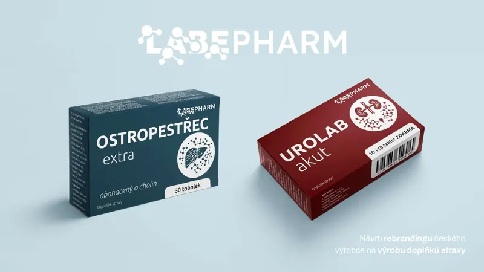
LabePharm
Nové logo a přehledný systém produktových obalů.
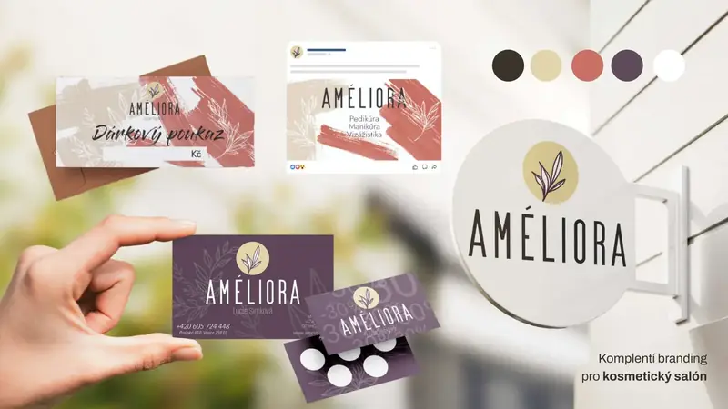
Améliora
Jednotná podoba salonu od poutače po dárkový poukaz.
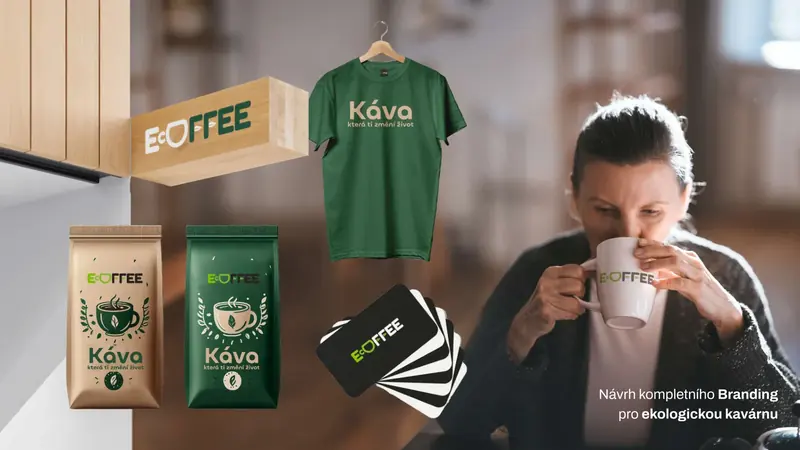
Ecoffee
Identita kavárny na obalech, merchi a věrnostních kartách.
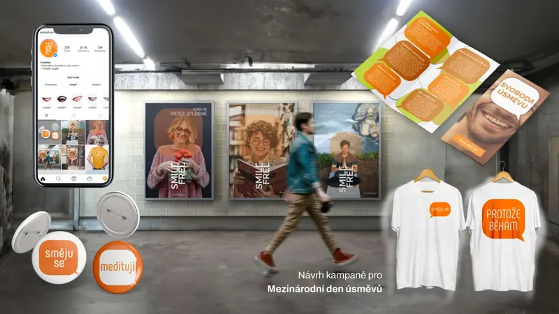
Den úsměvů
Jeden motiv pro různé příběhy a formáty kampaně.
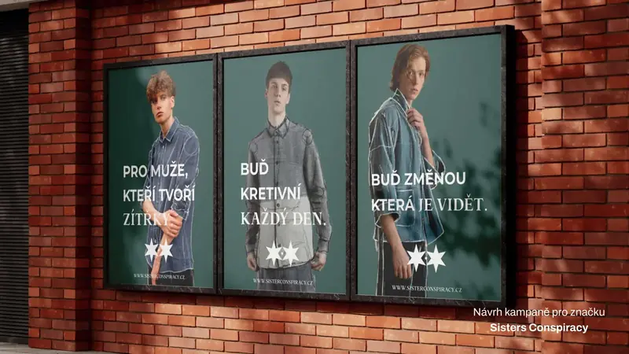
Sisters Conspiracy
Čitelná venkovní kampaň pro módní značku.
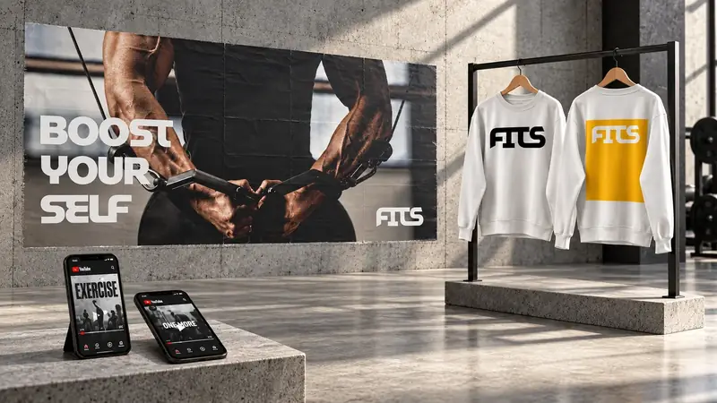
FITS
Identita fitness značky od velkých plakátů po sociální sítě.
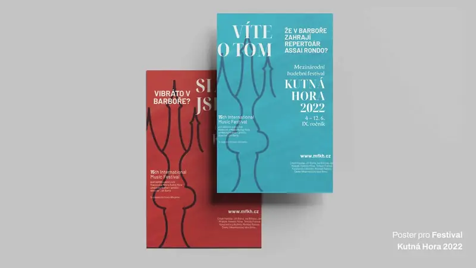
MFKH 2022
Festivalové plakáty propojené s charakterem Kutné Hory.
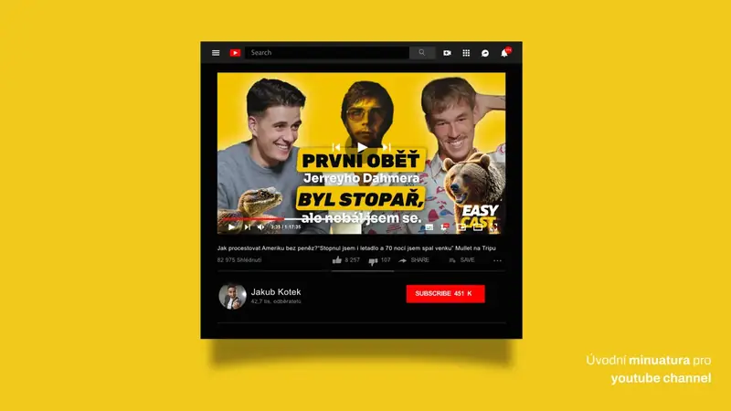
EasyCast
Čitelné miniatury a pravidla pro další videa.
Co spolu vytvoříme pro tvoji značku?
Napiš, co chystáš a s čím potřebuješ pomoct. Společně vybereme smysluplný rozsah a domluvíme další krok.
Poptat spolupráci